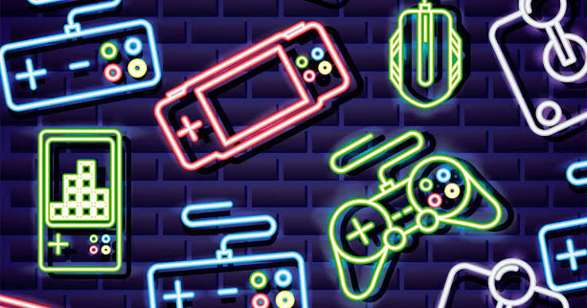

O impacto dos jogos independentes na indústria atual
Por: Pedro Lucas
O cenário de jogos indie tem crescido exponencialmente nos últimos anos, trazendo inovação e narrativas profundas que muitas vezes superam as grandes produções. Neste espaço, discutiremos como esses pequenos estúdios estão moldando o futuro do entretenimento digital e quais títulos você não pode deixar de conhecer.